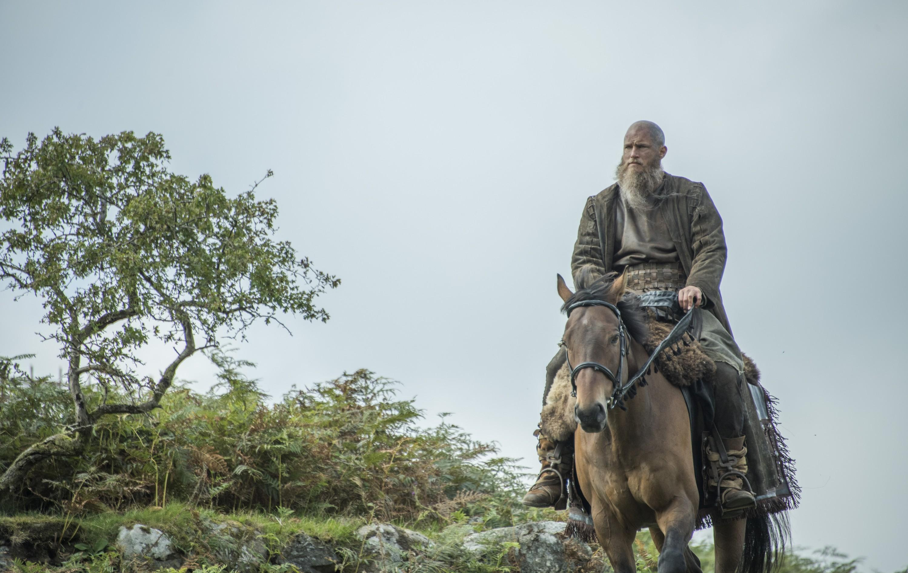

Hijos de Ragnar
Ragnar Lothbrok, un legendario guerrero vikingo, tuvo varios hijos que se destacaron en la historia de los vikingos y en las sagas nórdicas. Estos hijos, conocidos como los "Ragnarsons", continuaron el legado de su padre y dejaron una huella indeleble
en la historia de los pueblos del norte de Europa.
Los principales Ragnarsons incluyen:
- Bjorn Ironside: Famoso por sus expediciones vikingas en el Mar Mediterráneo y por ser uno de los primeros en explorar el Mar Mediterráneo.
- Ubbe: Conocido por su liderazgo durante la Gran Heathen Army, una coalición de guerreros vikingos que invadió Inglaterra en el siglo IX.
- Hvitserk: Participó en numerosas incursiones vikingas en Europa y desempeñó un papel importante en las luchas por el poder en los reinos vikingos.
- Ivar el Deshuesado: Famoso por su astucia y habilidades militares, lideró a los Ragnarsons en la invasión de Inglaterra y dejó una marca indeleble
en la historia de las Islas Británicas.
- Sigurd Snake-in-the-Eye: Conocido por su destreza en la batalla y su participación en la conquista y colonización de nuevas tierras vikingas.
Los Ragnarsons son figuras legendarias que encarnan el espíritu aventurero y guerrero de los vikingos, y su legado perdura en las historias y sagas de la época vikinga.
